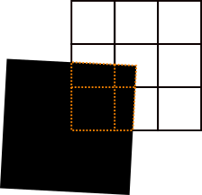

Module ctsimu.evaluation.test2D_WE_2
Test 2D-WE-2: Effect of partial pixel coverage
If a detector pixel is partly covered by an ideal absorber, its gray value should (approximately) scale inversely proportionally with the area fraction that is covered. This effect is tested here using a very thin (0.01 mm) edge that is made of a high-density material. Its upper right corner is placed at the center of the detector's central pixel, and then tilted around this point by 3°, as illustrated in the figure below.
To run the evaluation for this test, simply pass its identifier and the name of your metadata file (for projection and flat field) to the toolbox:
from ctsimu.toolbox import Toolbox
Toolbox("2D-WE-2", "2D-WE-2_metadata.json")

To calculate the ideal projection image of an ideal edge, we use the spherical trigonometry approach (see internal toolbox documentation: "How it works under the hood") to obtain an analytical value for each pixel's intensity. For pixels which are fully exposed or fully covered, this is straightforward. Pixels that are partly covered must be separated into an exposed region and a covered region. To treat the covered regions, we regard each pixel as a square polygon in the detector plane. Each of these polygons is then clipped using the shadow of the edge as a clipping polygon. By employing the Sutherland-Hodgman polygon clipping algorithm we obtain a clipped polygon for which we can calculate the solid angle in the same way as we do for a full pixel. The edges of these clipped polygons are illustrated by dotted red lines in the figure above.
The intensity of a pixel is therefore proportional to the solid angle of the uncovered area of the full pixel polygon:
I(\text{pixel}) \sim \Omega(\text{full pixel}) - \Omega(\text{clipped pixel}).
The toolbox regards any pixel with a gray value above zero and below 60000 as partly covered. For the analytical image, it identifies the set A of partly covered pixels, and for the provided projection image to be evaluated, it identifies a set M of partly covered pixels.
The following results are then calculated.
- A difference image, showing the gray value difference \Delta = \text{GV}_\text{measured}-\text{GV}_\text{analytical} for each pixel.
- The number of partly covered pixels in the analytical image, \left|A\right|=1053, and in the projection image to be evaluated, \left|M\right|.
- The number of pixels that are partly covered in both images: \left|A \cap M\right|, i.e., the number of pixels in the intersection of both sets. This number should match \left|M\right| if the edge is positioned correctly. If \left|M\right| is higher, this means that partly covered pixels have been identified in the image to be evaluated which should be either fully exposed or fully covered.
- The ratio r of the number of pixels that are covered in both vs. the number of pixels covered in the analytical image: r = \frac{\left|A \cap M\right|}{\left|A\right|} Ideally, this ratio is 1 (i.e., 100%). However, it only makes a statement about the extent to which M covers the ideal set A, and does not take into account any pixels that might be incorrectly partly covered outside of the region of analytically partly-covered pixels.
- The root mean square difference between the analytical and the measured image for all pixels in the analytically ideal set A, i.e., for all pixels that are partly covered in the analytical edge image: \text{RMSD} = \sqrt{\frac{1}{\left|A\right|} \sum_{p \in A} \left[ I_\text{measured}(p) - I_\text{analytical}(p) \right]^2 }.
- A list of the coordinates of partly covered pixels in the analytical edge image (i.e., all pixels from set \left|A\right|, their gray value in the analytical and in the measured image, and their respective difference.
Classes
class Test2D_WE_2 (resultFileDirectory='.', name=None, rawOutput=False)-
Expand source code
class Test2D_WE_2(generalTest): """ CTSimU test 2D-WE-2: Effect of partial pixel coverage. """ def __init__(self, resultFileDirectory=".", name=None, rawOutput=False): generalTest.__init__( self, testName="2D-WE-2", name=name, nExpectedRuns=1, resultFileDirectory=resultFileDirectory, rawOutput=rawOutput) self.geometry = None self.analyticalIntensityProfileImage = None # analytical flat field self.analyticalEdgeImage = None # stores the analytically computed edge image self.analyticalEdgeImageFF = None # stores the analytically computed edge image, flat-field corrected self.differenceImage = None # difference between analytical edge image and provided image self.numberOfPartlyCoveredPixels_analytical = 0 self.numberOfPartlyCoveredPixels_measured = 0 self.matchingPixels = 0 # number of partly covered pixels with matching positions self.partlyCovered_rmsd = 0 # RMSD of pixels in difference image that are partly covered in analytical image # Prepare the clipping rectangle for the analytical # calculation of the ideal edge image. In pixel coordinates. A = Vector( 0, 0, 0) B = Vector( 0, 300, 0) C = Vector(-300, 300, 0) D = Vector(-300, 0, 0) edgeAngle = 3 * (math.pi/180.0) # 3 deg edge rotation #A.rotate_2D_xy(edgeAngle) B.rotate_2D_xy(edgeAngle) C.rotate_2D_xy(edgeAngle) D.rotate_2D_xy(edgeAngle) self.clippingRectangle = Polygon(A, B, C, D) def prepare(self): """ Preparations before the test will be run with the images from the pipeline. """ if not isinstance(self.pipe, Pipeline): self.prepared = False raise Exception("Step must be part of a processing pipeline before it can prepare. Current pipeline: {}".format(self.pipe)) if not self.prepared: self.jsonScenarioFile = "2D-WE-2_2021-10-13v02r03dp.json" # Calculate the analytical image of an edge covering the image: if(self.jsonScenarioFile is not None): scenario = Scenario(json_dict=json_from_pkg(pkg_scenario(self.jsonScenarioFile))) self.geometry = scenario.current_geometry() self.geometry.update() self.analyticalIntensityProfileImage, self.analyticalEdgeImage = self.geometry.create_detector_flat_field_sphere(self.clippingRectangle) self.analyticalEdgeImageFF = copy.deepcopy(self.analyticalEdgeImage) self.analyticalEdgeImageFF.applyFlatfield(ref=self.analyticalIntensityProfileImage, rescaleFactor=60000.0) # Raise analytical images to maximum grey value of 60000 before saving them. # This rescaling does not affect the previous FF correction. self.analyticalIntensityProfileImage.renormalize(newMin=0.0, newMax=60000.0, currentMin=0.0, currentMax=1.0) self.analyticalEdgeImage.renormalize(newMin=0.0, newMax=60000.0, currentMin=0.0, currentMax=1.0) # Write analytical images: if self.rawOutput: self.analyticalIntensityProfileImage.saveRAW("{dir}/{name}_analytical_flat.raw".format(dir=self.resultFileDirectory, name=self.name), dataType="float32", addInfo=True) self.analyticalEdgeImage.saveRAW("{dir}/{name}_analytical_edge.raw".format(dir=self.resultFileDirectory, name=self.name), dataType="float32", addInfo=True) self.analyticalEdgeImageFF.saveRAW("{dir}/{name}_analytical_edge_corrected.raw".format(dir=self.resultFileDirectory, name=self.name), dataType="float32", addInfo=True) else: # TIFF self.analyticalIntensityProfileImage.save("{dir}/{name}_analytical_flat.tif".format(dir=self.resultFileDirectory, name=self.name), dataType="float32") self.analyticalEdgeImage.save("{dir}/{name}_analytical_edge.tif".format(dir=self.resultFileDirectory, name=self.name), dataType="float32") self.analyticalEdgeImageFF.save("{dir}/{name}_analytical_edge_corrected.tif".format(dir=self.resultFileDirectory, name=self.name), dataType="float32") self.numberOfPartlyCoveredPixels_analytical = numpy.count_nonzero((self.analyticalEdgeImageFF.px > 0) & (self.analyticalEdgeImageFF.px < 60000)) print("Number of partly covered pixels in analytical image: {}".format(self.numberOfPartlyCoveredPixels_analytical)) self.prepared = True else: raise Exception("Test 2D-WE-2: Please provide a JSON scenario description.") def run(self, image): self.prepare() self.currentRun += 1 self.numberOfPartlyCoveredPixels_measured = numpy.count_nonzero((image.px > 0) & (image.px < 60000)) print("Number of partly covered pixels in measured image: {}".format(self.numberOfPartlyCoveredPixels_measured)) # Match in covered pixels: self.matchingPixels = numpy.count_nonzero((self.analyticalEdgeImageFF.px > 0) & (self.analyticalEdgeImageFF.px < 60000) & (image.px > 0) & (image.px < 60000)) print("Number of pixels partly covered in both images: {}".format(self.matchingPixels)) self.matchRatio = self.matchingPixels / self.numberOfPartlyCoveredPixels_analytical print("Ratio (covered in both)/(covered in analytical): {:.2f}%".format(100.0*self.matchRatio)) self.differenceImage = copy.deepcopy(image) self.differenceImage.subtractImage(self.analyticalEdgeImageFF) if self.rawOutput: self.differenceImage.saveRAW("{dir}/{name}_difference.raw".format(dir=self.resultFileDirectory, name=self.name), dataType="float32", addInfo=True) else: # TIFF self.differenceImage.save("{dir}/{name}_difference.tif".format(dir=self.resultFileDirectory, name=self.name), dataType="float32") self.differenceImage.square() self.partlyCovered_rmsd = math.sqrt(numpy.mean(self.differenceImage.px[numpy.nonzero((self.analyticalEdgeImageFF.px > 0) & (self.analyticalEdgeImageFF.px < 60000))])) print("RMSD of partly covered (analytical) pixels: {:.2f} GV".format(self.partlyCovered_rmsd)) # Write a CSV file with all pixel values and their differences csvText = "# x [px]\ty [px]\tAnalytical GV\tMeasured GV\tDifference\n" partlyCoveredCoordinates_analytical = numpy.nonzero((self.analyticalEdgeImageFF.px > 0) & (self.analyticalEdgeImageFF.px < 60000)) for i in range(len(partlyCoveredCoordinates_analytical[0])): x = partlyCoveredCoordinates_analytical[1][i] y = partlyCoveredCoordinates_analytical[0][i] analytical = self.analyticalEdgeImageFF.px[y][x] measured = image.px[y][x] difference = measured - analytical csvText += "{x}\t{y}\t{analytical:.3f}\t{measured:.3f}\t{delta:.3f}\n".format(x=x, y=y, analytical=analytical, measured=measured, delta=difference) csvFileName = "{dir}/{name}_pixel_list.txt".format(dir=self.resultFileDirectory, name=self.name) with open(csvFileName, 'w') as csvFile: csvFile.write(csvText) csvFile.close() self.plotResults() return image def plotResults(self): pass def followUp(self): log("Writing evaluation results...") summaryText = "# |A| = Number of partly covered pixels in analytical image: {}\n".format(self.numberOfPartlyCoveredPixels_analytical) summaryText += "# |M| = Number of partly covered pixels in measured image: {}\n".format(self.numberOfPartlyCoveredPixels_measured) summaryText += "# Number of pixels partly covered in both images: {}\n".format(self.matchingPixels) summaryText += "# r = Ratio (covered in both)/(covered in analytical): {:.2f}%\n".format(100.0*self.matchRatio) summaryText += "# RMSD [partly covered analytical vs. measured]: {:.2f} GV".format(self.partlyCovered_rmsd) summaryFileName = "{dir}/{name}_summary.txt".format(dir=self.resultFileDirectory, name=self.name) with open(summaryFileName, 'w') as summaryFile: summaryFile.write(summaryText) summaryFile.close()CTSimU test 2D-WE-2: Effect of partial pixel coverage.
Ancestors
Methods
def prepare(self)-
Expand source code
def prepare(self): """ Preparations before the test will be run with the images from the pipeline. """ if not isinstance(self.pipe, Pipeline): self.prepared = False raise Exception("Step must be part of a processing pipeline before it can prepare. Current pipeline: {}".format(self.pipe)) if not self.prepared: self.jsonScenarioFile = "2D-WE-2_2021-10-13v02r03dp.json" # Calculate the analytical image of an edge covering the image: if(self.jsonScenarioFile is not None): scenario = Scenario(json_dict=json_from_pkg(pkg_scenario(self.jsonScenarioFile))) self.geometry = scenario.current_geometry() self.geometry.update() self.analyticalIntensityProfileImage, self.analyticalEdgeImage = self.geometry.create_detector_flat_field_sphere(self.clippingRectangle) self.analyticalEdgeImageFF = copy.deepcopy(self.analyticalEdgeImage) self.analyticalEdgeImageFF.applyFlatfield(ref=self.analyticalIntensityProfileImage, rescaleFactor=60000.0) # Raise analytical images to maximum grey value of 60000 before saving them. # This rescaling does not affect the previous FF correction. self.analyticalIntensityProfileImage.renormalize(newMin=0.0, newMax=60000.0, currentMin=0.0, currentMax=1.0) self.analyticalEdgeImage.renormalize(newMin=0.0, newMax=60000.0, currentMin=0.0, currentMax=1.0) # Write analytical images: if self.rawOutput: self.analyticalIntensityProfileImage.saveRAW("{dir}/{name}_analytical_flat.raw".format(dir=self.resultFileDirectory, name=self.name), dataType="float32", addInfo=True) self.analyticalEdgeImage.saveRAW("{dir}/{name}_analytical_edge.raw".format(dir=self.resultFileDirectory, name=self.name), dataType="float32", addInfo=True) self.analyticalEdgeImageFF.saveRAW("{dir}/{name}_analytical_edge_corrected.raw".format(dir=self.resultFileDirectory, name=self.name), dataType="float32", addInfo=True) else: # TIFF self.analyticalIntensityProfileImage.save("{dir}/{name}_analytical_flat.tif".format(dir=self.resultFileDirectory, name=self.name), dataType="float32") self.analyticalEdgeImage.save("{dir}/{name}_analytical_edge.tif".format(dir=self.resultFileDirectory, name=self.name), dataType="float32") self.analyticalEdgeImageFF.save("{dir}/{name}_analytical_edge_corrected.tif".format(dir=self.resultFileDirectory, name=self.name), dataType="float32") self.numberOfPartlyCoveredPixels_analytical = numpy.count_nonzero((self.analyticalEdgeImageFF.px > 0) & (self.analyticalEdgeImageFF.px < 60000)) print("Number of partly covered pixels in analytical image: {}".format(self.numberOfPartlyCoveredPixels_analytical)) self.prepared = True else: raise Exception("Test 2D-WE-2: Please provide a JSON scenario description.")Preparations before the test will be run with the images from the pipeline.
Inherited members